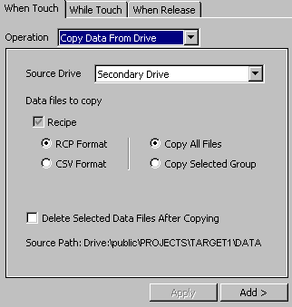

|
|
|
|
|
|
|
|
Use the dialog to set up Copy Data From Drive operations. This feature imports recipes in CSV format from a removable drive to the target machine. For information on setting the source data location, see Appendix 5.11.1, Types of Data Locations.
When using this operation to copy data from a drive in CSV format, the RCP files must exist on the target. The Copy Data From Drive operation does not create new recipe groups. The CSV format files must contain all the recipes you want. Any recipes left out will be lost during the copy operation.

The status of the copy operation is monitored by the system variable: _FileTransferStatus. For more information, see Section 6.7.1, System Variables: _FileTransferStatus.

The Copy Data From Drive operation copies a recipe group file or a collection of them.
The Copy Data From Drive operations can only be used with switches and panel function keys.
You can only set Copy Data From Drive operations in the When Touch tab.
The Copy Data From Drive operation will not work correctly if a custom folder name is specified for the Copy Data To Drive operation. Keep the Custom Folder option disabled in the Copy Data To Drive dialog if you are using the Copy Data From Drive feature.

Operation |
Description |
Source Drive |
Select the drive where the data files you want copied are located: Secondary Drive or Optional Drive. For more information, see Appendix 5.11.3, Supported Data for Each Drive. |
Recipe |
Enable to copy recipes. Then select the format of the recipe files (RCP or CSV) you want to copy to the target. For more information on recipes, see Section, 17.1, About Recipe. |
Copy All Files |
Enable to copy all the recipes found in the source drive. |
Copy Selected Group |
Enable to copy only the selected recipe group file. The _RecipeControlDefault.RecipeGroupNumber variable determines the recipe group that will be used during the operation. For more information on this recipe control variable, see Section 17.3.5, Setting Up Recipe Controls. |
Delete selected data files after copying |
Enable to delete the files in the source location after copying. This is equivalent to a cut and paste operation. When disabled, the source files are copied over without being deleted. |
Source Path |
Displays the path where the data files are copied from. |